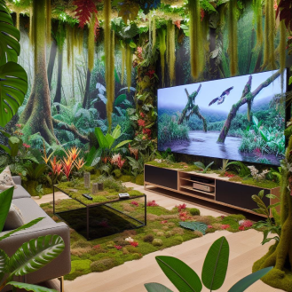
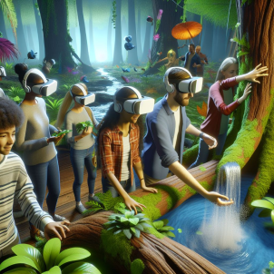
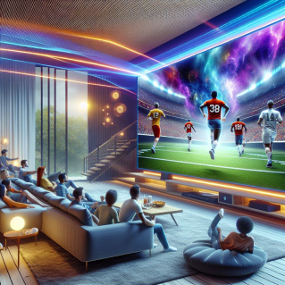
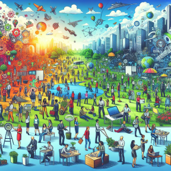
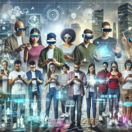
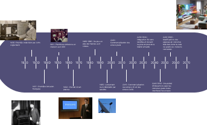

La Télévision Immersive, Plongez au Coeur de vos Émissions Préférées
Une simple pression sur la télécommande peut métamorphoser votre salon. en une vaste forêt tropicale, un désert brûlant ou même l'intérieur d'une station spatiale. Vous ne vous contenterez plus de regarder un documentaire ou un film : vous y serez pleinement immergé. Vous pourrez toucher, sentir et vivre l'expérience comme si vous y étiez réellement.
Une Expérience Sensorielle Totale
La Télévision Immersive utilise des technologies de pointe pour modifier physiquement l'environnement de votre pièce en fonction du contenu diffusé. Imaginez regarder un documentaire sur la forêt amazonienne : votre salon se métamorphose instantanément en une jungle luxuriante. Les murs disparaissent derrière une végétation dense, le sol se couvre de feuilles et de mousse.

Interaction Tactile et Sensorielle
Ce qui distingue vraiment cette technologie, c'est son aspect tactile. Vous pouvez toucher et interagir avec les éléments de l'environnement virtuel* comme s'ils étaient réels. Effleurez l'écorce rugueuse d'un arbre, sentez la texture d'une feuille, ou plongez vos mains dans un ruisseau virtuel.

Effet ressenti lors de cette expérience de télévision du futur
Au-delà du Simple Visionnage
La Télévision Immersive transforme le visionnage passif en une expérience active et engageante. Que vous regardiez un film d'action, un événement sportif ou une émission éducative, vous vous retrouvez au cœur de l'action, participant pleinement à l'expérience plutôt que de simplement l'observer.

Les possibilités sont infinies
- Voyagez à travers le monde sans quitter votre salon
- Assistez à des concerts comme si vous étiez sur scène
- Explorez des sites historiques reconstitués avec une précision incroyable
- Participez à des cours de fitness interactifs dans des décors variés

L'Avenir du Divertissement à Domicile
La Télévision Immersive représente l'avenir du divertissement à domicile. Elle fusionne les frontières entre le réel et le virtuel, offrant une expérience de visionnage qui stimule tous les sens. C'est plus qu'une simple évolution technologique ; c'est une révolution dans notre façon de consommer les médias et d'interagir avec le contenu.

Alors que nous nous dirigeons vers un avenir où la réalité augmentée fait partie intégrante de notre quotidien, la Télévision Immersive se positionne comme le chaînon manquant entre notre monde physique et les univers virtuels infinis qui n'attendent qu'à être explorés.
Voici une frise pour l’évolution de la télévision


{kind=link}